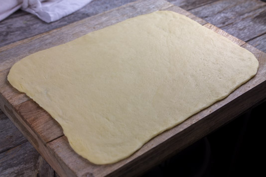
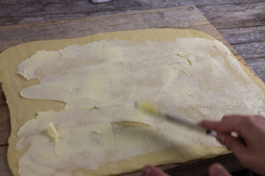
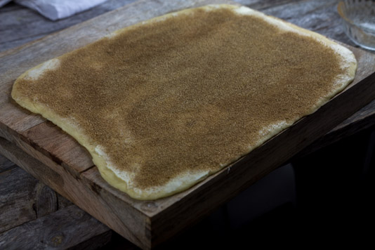
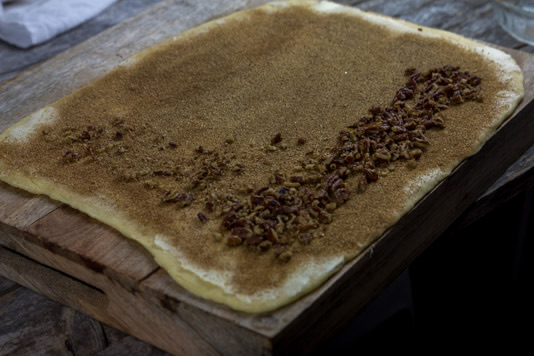
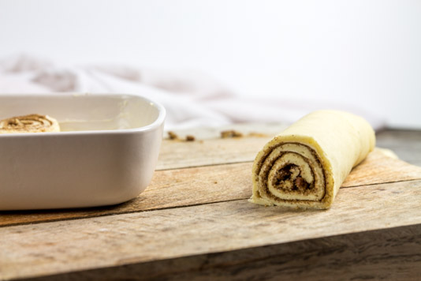
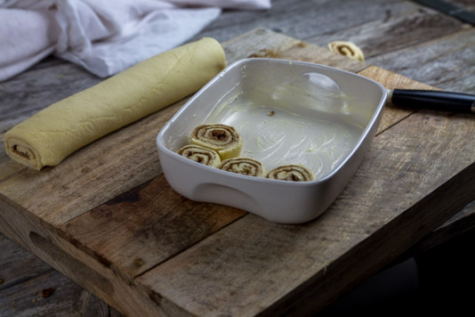
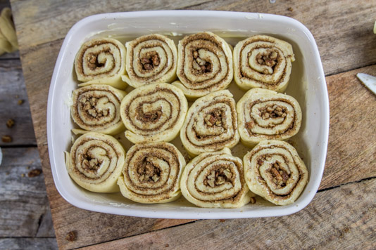
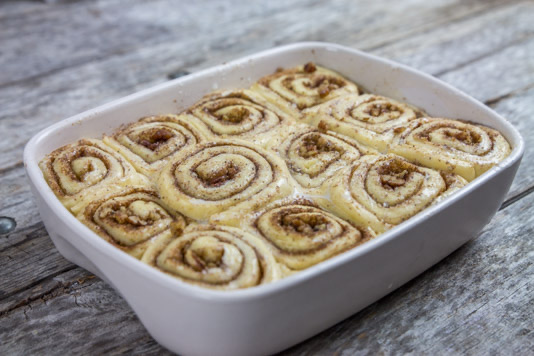

Cinnamon rolls

Aujourd’hui je vous retrouve avec un air de dimanche matin avec cette recette de cinnamon rolls!
Non mais sincèrement je parle de dimanche matin mais je pense que le concept du « brunch » ou du gros petit déjeuner du week-end si vous préférez a été inventé pour nous éviter de manger comme ça tous les jours (sinon je serai la première à me lâcher^^) et ce doit être une femme qui a créé ça (vous devez sans doute comprendre pourquoi? Car un homme pourrait manger tout le plat qu’il ne prendrait pas un gramme… ou presque). Bref tout ça pour dire que moi des cinnamon rolls j’en mangerai bien tous les matins (tous les midis et tous les soirs!) mais ma conscience m’influence dans un tout autre sens et je me contente (tristement) des dimanches matin. J’ai découvert les cinnamon rolls il y a un an lors de mon premier séjour aux Etats-Unis et c’est depuis devenu une de mes grandes obsessions culinaire. Comme je le précise dans le corps de la recette, il faut déguster les cinnamon rolls à la sortie du four, verser le glaçage encore chaud coulant sur le dessus et c’est vraiment (vraiment) parfait pour bien débuter la journée. La recette en elle-même est très facile à faire, il faut juste patienter pendant les temps de repos mais sinon rien de très compliqué! Personnellement je prépare ma pâte, je roule, je découpe mes cinnamon rolls et je les laisse lever toute une nuit comme ça ils n’ont plus qu’à passer au four le lendemain matin et ça leur a laisser le temps de bien lever et moi j’ai juste eu à dormir pour patienter plutôt que de faire des allers-retours toutes les 5 minutes jusqu’au four, espérant qu’ils aient miraculeusement gonflé en 15 minutes! Je vous laisse découvrir la recette en espérant qu’elle vous plaira et je vous dis à très vite 🙂
Ingrédients
- Farine (+un peu pour le plan de travail) - 400g
- Levure de boulangerie sèche - 1càc
- Eau tiède - 50ml
- Lait tiède - 100ml
- Beurre fondu - 50g
- Oeuf - 1
- Sel - 2 pincées
- Sucre en poudre - 30g
- Extrait de vanille - 1càc
- Beurre doux - 100g
- Cassonade - 60g
- Cannelle - 2càs
- Lait - 1càs
- Facultatif : noix de pécan écrasées - 1 grosse poignée
- Sucre glace - 100g
- Fromage à tartiner nature (philadelphia, St moret...) - 100g
- Eau chaude - 30ml
Instructions
- Dans le bol de votre robot (à défaut dans un grand saladier), verser et mélanger la farine, le sucre et le sel
- Dans une petite casserole verser l'eau, le lait et le beurre
- Faire fondre le beurre sur feu doux
- Quand le beurre est fondu assurez vous que le mélange ne soit pas trop chaud (pas plus de 50° sinon la brioche ne montera jamais)
- Verser la levure dans la casserole et laisser reposer 5 minutes
- Verser le contenu de la casserole dans le bol de votre robot contenant la farine
- Ajouter l’œuf et l'extrait de vanille
- Pétrir pendant 15 minutes (30 minutes si vous pétrissez à la main) Si vous ne voulez pas vous embêter à faire tout ça vous pouvez mélanger tous les ingrédients dans le bol de votre robot (eau et lait tiède) et pétrir 15 minutes.
- Huiler le fond d'un grand saladier (ou directement le bol de votre robot)
- Déposez-y la pâte
- Couvrir d'un torchon et laisser lever pendant 1 h 30 à température ambiante (la pâte doit avoir doublé de volume) Petite astuce : Pendant la préparation de ma pâte je lance le four à 70°. Quand ma pâte est prête je la couvre d'un torchon et je la mets dans le four que j'éteins et que je referme. Il fait plutôt froid chez moi et avec cette astuce je m'assure donc que ma pâte lève correctement.
- Fariner votre plan de travail
- Abaisser la pâte sous la forme d'un grand rectangle
- Mélanger la cassonade et la cannelle et réserver
- Étaler le beurre préalablement ramolli sur toute la surface de la pâte
- Saupoudrer du mélange cassonade et cannelle sur toute la surface de la pâte
- Déposer une grosse poignée de noix de pécan (préalablement écrasées) sur toute la longueur
- Rouler la pâte dans le sens de la longueur
- Beurrer correctement un moule
- Couper les extrémités de ce gros rouleaux qui généralement ne sont pas uniformes
- Découper ensuite des rouleaux de taille identiques
- Placez-les dans le moule préalablement beurré
- Couvrir d'un torchon
- Laisser lever encore 1 h 30 (moi je les laisse toute la nuit pour les avoir bien frais le dimanche matin!)
- Préchauffer le four à 200°
- Badigeonner d'un peu de lait
- Enfourner et laisser cuire jusqu'à ce que les roulés soient bien dorés (environ 20-25 minutes)
- Pendant la cuisson des cinnamon rolls préparez le glaçage
- Mélanger le fromage à tartiner et le sucre glace
- Ajouter l'eau chaude
- Bien mélanger de manière à obtenir un mélange homogène








Les tips de la communauté
Énorme succès avec cette recette très bien expliquée et presque impossible à rater. Les testeurs adorent le glaçage crémeux et la pâte légère. L'astuce du four éteint pour la levée plaît beaucoup. Quelques ajustements mineurs mentionnés selon les conditions.
Astuces
- Astuce clé : utiliser un four préalablement chauffé à 70°C puis éteint pour la levée
- Laisser reposer à température ambiante la nuit avant cuisson
- Ajouter des raisins secs dans la garniture pour une variante
- Bien vérifier que la levure ne dépasse pas 50°C pour ne pas la tuer
- Envelopper les restes au torchon et les réchauffer légèrement le lendemain
Variantes suggérées
- Ajouter des raisins secs à la garniture à la cannelle
- Remplacer le beurre par de l'huile de noix de coco pour une version végan
- Faire une variante chocolat avec du Nesquick à la place de la cannelle
Ajustements signalés
- La pâte peut durcir légèrement le lendemain mais redevient molle à la cuisson
- Si la pâte ne monte pas, c'est généralement parce que la levure a été tuée par une température trop haute